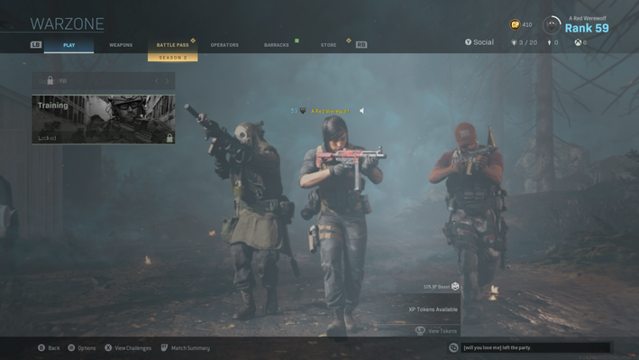
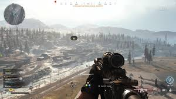
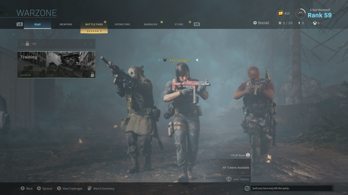
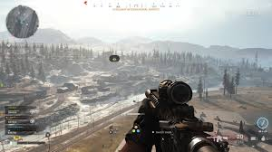

¿Qué es Warzone?
Call of Duty: Warzone es un videojuego del género Battle Royale desarrollado por Infinity Ward y Raven Software, y publicado por Activision. Fue lanzado en marzo de 2020 como parte del universo de Call of Duty: Modern Warfare.
Warzone permite partidas de hasta 150 jugadores, donde los participantes compiten en mapas como Verdansk o Al Mazrah usando armas realistas, vehículos tácticos y estrategias militares. Una de sus mecánicas únicas es el Gulag, una segunda oportunidad para volver al combate si pierdes tu primera vida.
Gracias a su acción intensa, realismo gráfico y constantes actualizaciones, Warzone se ha convertido en uno de los juegos más jugados del mundo, y un pilar del universo Call of Duty.
Galería de imágenes
 


